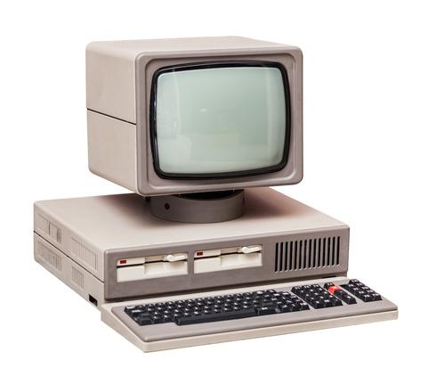

～パソコンの歴史～
| 年度 |
内容 |
PC |
| 1970年代 |
世界で初めてのパソコンとして歴史に残るものは、1975年にアメリカのMITS社が発売した組み立てキットの「Altair8800」である。日本のパソコンの歴史は、現在のセイコー株式会社に当たる精工舎が、1977年に国産初のマイクロコンピュータを発売したことからはじまる。マイクロコンピュータとは、現在親しまれているパーソナルコンピュータの原型ともいえる組み立て式のコンピュータのことである。
同年には、アメリカのアップル社が「Apple Ⅱ」を発売し、パソコン業界の歴史において世界初のベストセラーとなった。 |
 |
| 1980年代 |
1980年代に入ると日本仕様のパソコンとして歴史に残る大ヒットを記録した「PC-9801」がNECから発売された。このパソコンは、それまで使用されていたアメリカ製のパソコンと異なり、日本語入力に長けていたため大ヒットしたのである。このシリーズ名にある98から「キューハチ」として親しまれるようになった。
一方、この時期のアメリカでは、現在のアップルに当たるアップルコンピュータ社から「Macintosh(マッキントッシュ)」が登場した。さらにマイクロソフト社からは画面上で直感的に操作できるGUIを採用したOS（オペレーティングシステム）「Windows(ウィンドウズ)」が登場した。 |
 |
| 1990年代 |
1990年代のパソコンの歴史に残る大きな事柄は、1992年にDOS/Vパソコンが登場したことがあげられる。それまでのパソコンには、日本語表示がなかったことに対し、このDOS/Vパソコンはキーボードからの入力やファイルの保存などを日本語で処理することを可能にしたのだ。しかし、この時期に発売された最安値のモデルの「Prolinea3/25zs」であっても12万8千円するという大変高価な存在であった。
1996年には超小型のパソコンが開発され、それまでは企業に勤めるユーザーなどを中心に使用されていたパソコンが誰でも使える時代へと歴史が変化してきたのである。
1997年には、世界に先駆けてソニーがスタイリッシュなパソコンの元祖といえる「バイオノート505(PCG-505)」を発売した。現在の海外メーカーのノートパソコンも金属製の薄型モデルとなっているが、これはこのバイオノートが先駆けといわれている。
1998年には、パソコンが一般家庭に普及し始めたことを目途に、アップルは安価でおしゃれな一体型デスクトップ「iMac G3」を発売した。これを機にパソコンは、よりカジュアルなものへと歴史の中でも大きく変化したといえる。 |
 |
| 2000年代 |
2000年代に突入してからもパソコンは進化を続け、新しい歴史を築いている。2001年にWindows XPが発表され、それまでのパソコンの歴史ではデスクトップが主流であったものが、ノートパソコンが主流の時代へと変化をとげた。
また、この時期にはテレビとレコーダーの両方の機能を備えるテレビパソコンが販売されはじめた。富士通んお「DESKPOWER Kシリーズ」やNECの「VALUESTAR Tシリーズ」が大きな人気製品となったのである。さらに一般家庭向けの製品では、スピーカーの存在を協調した製品などAVを意識したパソコンが主流の時代になった。 |
 |